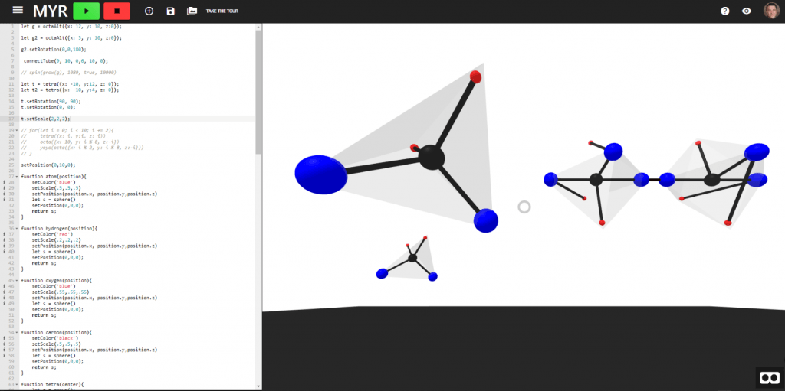

Projects
MYR.js: Front and back-end developer
February 2018 - Present
Abstract:
MYR is a browser-based, educational platform built to spark student interest
in computer science by allowing users to write code that generates three-dimensional, animated scenes in
virtual reality. The interface consists of two primary components: (1) an integrated editor, which leverages
the MYR API and the A-Frame entity-component-system, and (2) a real-time renderer that displays the corresponding
scene. The scenes, which vary in complexity, are viewable using virtual reality headsets, smartphones, and
any device that supports a web browser.
By providing access to the specific domain of virtual reality to students, the
system aims to make computer science concepts tangible for novice programmers. The MYR development team conducted
pilot tests with middle school students in order to collect feedback from this audience. The larger goal
of the project is to develop MYR as a research tool to gain insight into computing students’ success, motivation,
and confidence in learning computing.
Read the full paper here.